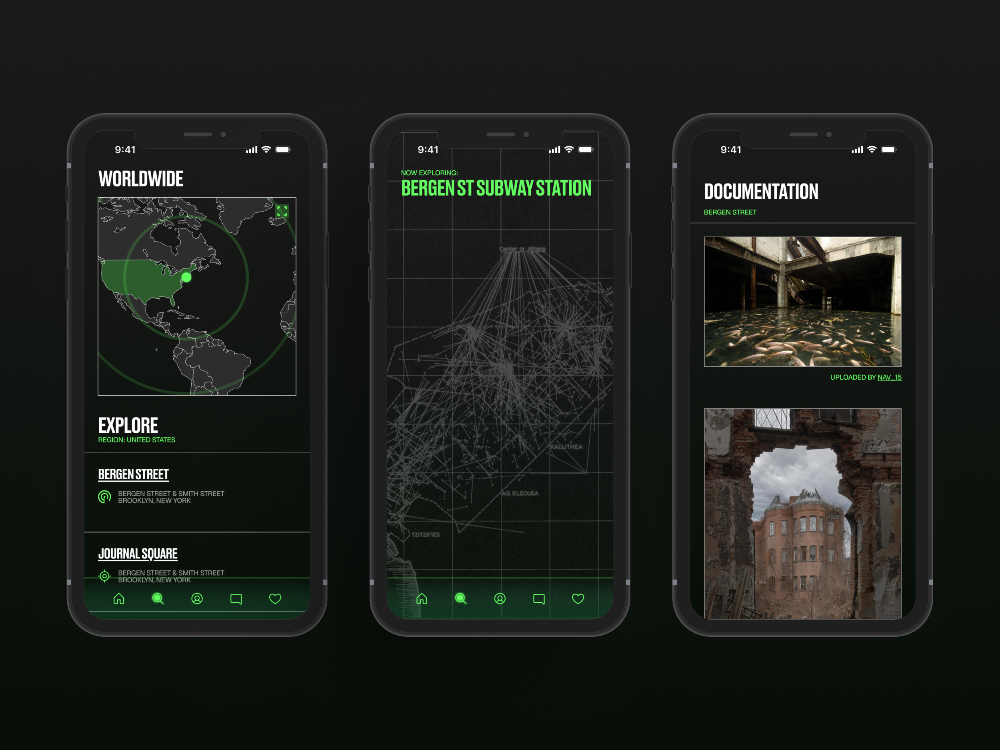
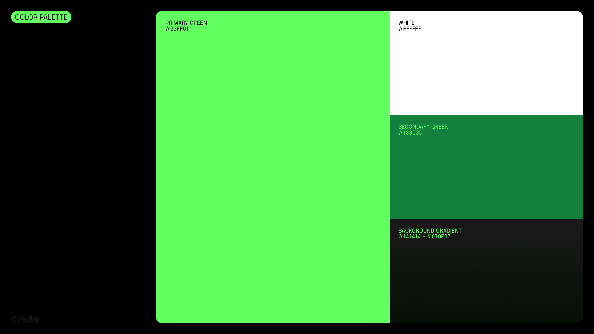
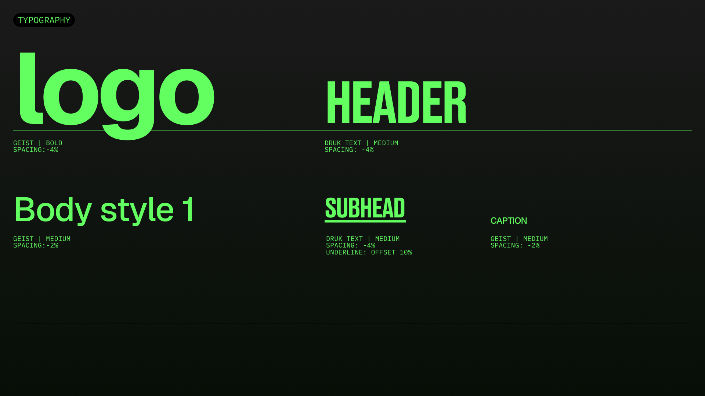
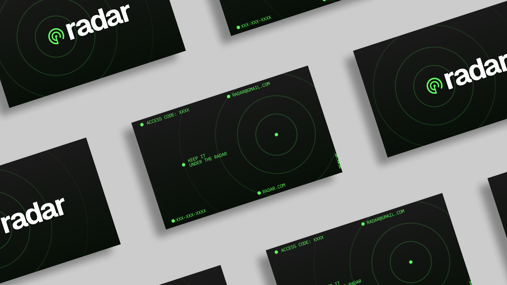

I'm a Junior at Parsons School of Design, majoring in Communication Design
and minoring in Economics. I'm a designer and creative coder, with a love/fear/fascination with technology,
resulting in an insatiable need to experiment with new techniques and technologies in order to expand my design toolkit. My work
is focused on using interactivity in its various forms to create engaging and unique experiences.
I love monospaced fonts and cats as well.
Let's work together! You can find me at:
LinkedIn
Email
GitHub

radar is a navigation-based platform for urban explorers to discover, map,
and document hidden spaces within cities. It combines precision mapping with a controlled,
community-driven system, enabling exploration while respecting the discretion central to urbex culture.
This is currently a WIP! The full case study will be up shortly.


